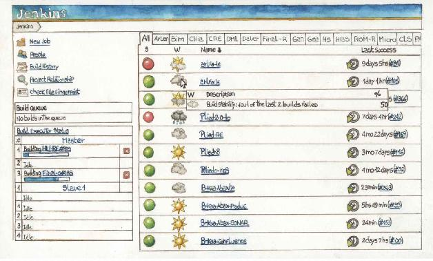

Integrando el producto al instante
Es viernes y Nicolás, que estuvo las últimas dos semanas trabajando en una nueva funcionalidad, termina de hacer las pruebas en su máquina. Al observar que no hay errores, envía todos los cambios al repositorio en el que está el resto del producto y parte a su casa. El miércoles de la semana siguiente Diego pretende hacer lo mismo, pero cuando va a integrar sus cambios, se encuentra con los fuentes modificados por Nicolás. Los descarga localmente y todo deja de andar. La aplicación ni siquiera compilaba. Pasaron varios días sin que nadie se diera cuenta que al producto le faltaban porciones de código. El problema es que Diego no sabe bien que es lo que falta porque los cambios fueron tantos durante esas dos semanas que le es muy difícil entender en donde está el problema. Finalmente, aparece Nicolás diciendo que se olvidó de agregar un archivo nuevo que era necesario para la compilación. Una vez solucionado el tema, funciona lo que debió funcionar desde el miércoles. Todavía falta que Diego entienda como incorporar sus cambios dentro del código que por diez días solo conoció Nicolás.
La etapa de integración
Hasta no hace mucho tiempo, uno de los trabajos más complicados dentro del proceso de desarrollo era la integración de un producto a partir del trabajo de uno o varios equipos. Muchos proyectos encaraban esta etapa luego de trabajar semanas, meses y hasta años en sus módulos, quizá queriendo copiar la manera en que se trabaja en otras industrias en donde es posible la construcción de varios componentes por separado para luego dar paso a su ensamblado en un producto final. Un caso frecuente, por ejemplo, en la industria aeronáutica o automotriz.
Quien haya vivido alguna etapa de integración como la mencionada puede estar de acuerdo en que eran muy complejas porque siempre existían problemas entre lo definido y lo construido. Las interfaces entre los diferentes módulos, aunque a veces se respetaban, en muchas ocasiones terminaban con un comportamiento que no coincidía con el esperado. Ante cada problema había que recodificar, volver a hacer la prueba del módulo y a probar todas las interacciones. Pocas veces se trataba de una etapa con final cierto. Las fallas aparecían todo el tiempo y los retrasos en las correcciones de un módulo impactaban en los tiempos de los demás. Por si fuera poco, los cambios podían hacer que un módulo funcione pero que otro dejara de hacerlo.
Esta forma de trabajar puede entenderse hace unos 30 años cuando el trabajo en equipo era mucho más complicado por las restricciones técnicas que había, pero desde hace bastante tiempo existen los sistemas de control de versiones (VCS en inglés, nosotros los llamaremos SCV). Los SCVs trajeron muchas ventajas, como por ejemplo:
• Que todo equipo pueda acceder a las diferentes versiones del código del producto.
• Poder revertir cambios.
• Asegurar y auditar el acceso al código fuente.
• Indicar cuando más de un integrante modifica la misma porción de código.
Las herramientas para gestionar estos SCVs también posibilitaron que un equipo pueda generar, a partir de una determinada versión del código, varias ramas paralelas de desarrollo y que una vez terminadas se reintegren a la rama principal. También permiten marcar cual es la versión que se encuentra productiva, o hacer mantenimiento de una versión mientras se desarrolla una nueva y poder trasladar los cambios entre las distintas versiones.
El control de versiones es una actividad que se enmarca dentro de la disciplina de Administración de la Configuración, conocida en inglés como Software Configuration Management.
Figura 10.1. Ejemplo de trabajo con ramas con un SCVs.
Las ventajas de utilizar los SCVs son evidentes y no solo en un entorno ágil85. Si algo no funciona, podemos volver a la versión anterior que no tenía problemas, identificar y aislar el cambio en el código que generó la falla.
Cómo se usa un SCV
Para quien nunca trabajó con un sistema de control de versiones explicaremos con una breve descripción su funcionamiento. Un SCV es una herramienta de almacenamiento donde se van guardando las diferentes versiones de los archivos con los que se trabaja. Para simplificar las cosas, vamos a decir que existe un repositorio en un servidor al que todos los integrantes del equipo tienen acceso. Para trabajar con repositorios, al menos tenemos 2 lugares donde se encuentra el código: en un ambiente remoto y en nuestro espacio de trabajo, generalmente algún directorio o carpeta en nuestro sistema de archivos.
Cuando queremos trabajar, nos conectamos al servidor para actualizar nuestro ambiente local con los cambios que se pudieron haber hecho desde la última vez que estuvimos desarrollando. Luego trabajamos como siempre con nuestras herramientas generando cambios en el código existente (creando nuevos archivos, haciendo modificaciones y eliminando elementos que ya no necesitamos). Por último enviamos nuestras modificaciones locales al repositorio remoto. Si se detecta que desde que descargamos el código hasta que lo volvimos a enviar algún otro integrante del equipo modificó alguno de los archivos que queremos actualizar, puede generarse lo que se denomina un conflicto. Esto surge porque, cuando existen varios cambios simultáneos a un archivo, no siempre hay forma de saber cual es la versión final que debe mantenerse. Para resolver el conflicto, debemos indicar el contenido que quedará como resultado de mezclar nuestro archivo con el que está en el repositorio y recién en ese momento podremos enviarlo al servidor. Ahora que completamos con éxito la actualización del repositorio remoto, cualquier integrante del equipo que esté autorizado tendrá nuestros cambios a su disposición.
Figura 10.2. Ejemplo de uso de un archivo con un SCV.
Una idea sencilla y genial
Basándose en la existencia de los sistemas de control de versiones, hace unos años algunos programadores, entre quienes se encontraba Kent Beck86, comenzaron a cuestionarse la utilidad de una etapa de integración en los procesos de desarrollo y plantearon lo siguiente:
Si en vez de ser una etapa, la convertimos en un paso de nuestro trabajo diario, la integración, como la conocíamos antes, desaparece y nos aseguramos que al finalizar el día siempre tendremos en el repositorio la última versión del código integrado. Así dieron nacimiento a la práctica conocida como Integración Continua.
Para entenderla, vamos a describirla como una serie de pasos. Antes que nada vamos a suponer que todo el equipo cuenta con un repositorio común donde se integrará el producto. También supondremos que el equipo conoce el funcionamiento de un SCV, y que cada vez que un integrante escribe código, lo acompaña con sus pruebas automatizadas.
Los pasos son:
• Seleccionar una tarea a desarrollar.
• Actualizar la copia local.
• Codificar la tarea con sus pruebas.
• Ejecutar las pruebas localmente.
• Enviar cambios.
• Verificar la integración.
• Si hay problemas, arreglarlos.
Para poder integrar diariamente, nuestro trabajo tendría que poder completarse en un día o menos. Por este motivo, deberíamos procurar que cada tarea a integrar sea pequeña, idealmente que pueda resolverse en un día o menos. Si la tarea es más grande, sería bueno dividirla en subtareas más pequeñas.
Al actualizar nuestra copia local descargamos la última versión del SCV en el ambiente de desarrollo. Verificamos que el código del repositorio funciona correctamente. Si llegara a darse el caso que tuviese errores, debemos corregirlos antes de comenzar la tarea.
Al codificar, como dijimos arriba, también tenemos que escribir las pruebas unitarias que verifican que el código cumple su función. La integración continua está muy ligada a la escritura de pruebas automatizadas, porque con la existencia y ejecución de estas pruebas es que nos podemos dar cuenta si es que algo no anda bien. Es recomendable que las pruebas sean unitarias y de rápida ejecución, ya que en una aplicación grande puede haber miles de pruebas y deben ejecutarse en un plazo razonable (unos minutos en lo posible) para que la integración continua tenga sentido.
Una vez terminado nuestro trabajo de codificación y escritura de pruebas, nos conectamos al repositorio. Si hay nuevos cambios, los descargamos y nos aseguramos que localmente la aplicación siga compilando y que las pruebas se ejecuten sin errores. Cuando estamos seguros que todo funciona bien, enviamos los cambios al SCV.
Hasta este paso, el trabajo es el que haríamos con cualquier SCV. La diferencia es que cada vez que alguien envía un cambio al repositorio (o cada cierto tiempo), se dispara la ejecución de un proceso de integración que toma los cambios del SCV, y en un ambiente previamente definido y configurado, construye la aplicación y ejecuta las pruebas.
Figura 10.3. Esquema con los pasos de trabajo diario con Integración Continua
El proceso que se ejecuta puede ser un simple script creado por nosotros que descarga los cambios, compila y ejecuta las pruebas, o también puede ser una aplicación específica de Integración Continua que se instala y se configura para que ejecute el build por nosotros.
Qué es un build
Es la acción de tomar todos los fuentes y demás componentes de un sistema y generar la aplicación ejecutable. Durante el build se ejecutan tareas de precompilación, compilación, enlace/ensamblado de objetos en bibliotecas, y también otras asociadas con la verificación del resultado como chequeo estático de código, ejecución de pruebas unitarias, etc. No todas las plataformas de desarrollo relacionan el build con la compilación ya que hay lenguajes que no se compilan como, por ejemplo, los interpretados pero el concepto es siempre generar un resultado ejecutable ya sea en un sistema operativo, máquina virtual o servidor de aplicaciones.
Si durante la ejecución de este proceso ocurre alguna falla, el script o la aplicación que ejecuta el build debe notificar al equipo que el código que está en el repositorio no está correctamente integrado. A partir de ese momento sus integrantes deben corregir los errores de inmediato.
Para que quede claro, si el resultado del build es erróneo, el foco del equipo debe cambiar para trabajar en solucionar el error y lograr que la integración vuelva a funcionar bien.
Puesta en práctica
Ahora que conocemos qué es la Integración Continua, intentaremos detallar la manera de implementarla en un proyecto.
Primero necesitamos:
• 1 sistema de control de versiones.
• 1 script con las instrucciones del build.
• 1 servidor de integración.
Para tener nuestro sistema de control de versiones tenemos varias opciones, tanto de código abierto como cerrado, podemos instalarlos por nuestra cuenta y configurarlos en algún servidor o podemos contratar alguna empresa que brinde servicio de control de versiones con lo cual nos evitamos las tareas técnicas y operativas.
El script de build, dependiendo de la tecnología con la que se trabaje, pueden ser archivos que están muy relacionados con la plataforma utilizada (por ejemplo los archivos .csproj que se usan con C# o C con sus makefiles), pueden ser un estándar adoptado por la comunidad (Java con sus build.xml o pom.xml) o puede ser que tengamos que crearlo a mano, escribiendo comandos en un archivo bash (.sh) o de procesamiento por lotes (.bat).
El servidor de integración lo necesitamos para descargar los cambios y ejecutar el build. Allí no debe haber herramientas de desarrollo (IDEs) aunque sí deben existir los comandos y herramientas que son invocadas por el script de build. Por ejemplo, los utilizados para generar el ejecutable a partir de los fuentes, ejecutar las pruebas, etc. Es importante que este servidor esté configurado en condiciones similares al productivo, en relación a como interpreta los datos regionales, sensibilidad del nombre de los archivos, versión del sistema operativo y de las aplicaciones de base (Base de Datos, Máquinas Virtuales, etc.) para evitar que un build exitoso en este servidor se transforme en una aplicación con errores por este tipo de problemas.
Al script de build tendremos que indicarle que se ejecute periódicamente. Si estamos haciendo todo a mano, una opción es crear uno nuevo, que podemos llamarlo de integración. Deberá mínimamente descargar los cambios desde el SCV, ejecutar el script de build e informar el éxito o fracaso (sobre todo el fracaso) del proceso. Una vez armado, podremos agregarlo al planificador de tareas del sistema operativo (como, por ejemplo, el cron en Unix/Linux o el administrador de tareas en Windows). También es posible integrarlo con el sistema de control de versiones para que se ejecute ni bien se realiza una actualización de los datos en el repositorio.
Si no queremos crear otro script, podemos utilizar alguna herramienta de integración continua. Estas existen en modalidad comercial o gratuita, de código abierto o cerrado, instalable o consumible como servicio desde la nube. Si se utilizan, varias de las tareas ya mencionadas pueden delegarse como, por ejemplo, la integración con el sistema de control de versiones o la notificación del resultado.
La ventaja de utilizar una herramienta de integración continua es que brinda muchas facilidades de configuración. Por ejemplo, desde un único lugar se pueden configurar las condiciones de integración de todos los proyectos de la organización o del área. Nos permite, además, integrar con diferentes herramientas que complementan el build como ciertos validadores, notificadores, generadores de documentación y reportes. También trabajan con los sistemas de control de versiones más conocidos gestionando la descarga, el manejo de credenciales de seguridad, la modalidad de chequeo de cambios en el repositorio, etc. Este tipo de software también facilita las configuraciones más avanzadas como, por ejemplo, el manejo de dependencias entre proyectos o módulos de un proyecto forzando la ejecución del build de una aplicación si se completó exitosamente la construcción de alguno de sus de sus componentes. Adicionalmente, generan un espacio homogéneo para controlar los proyectos de una organización dando visibilidad al estado de cada proyecto, dando una idea de la “salud” de cada uno.
Figura 10.4. Pantalla de monitoreo de proyectos de la herramienta Jenkins.

Algunas herramientas de uso común dependiendo la plataforma son:
Ahora que conocemos lo que significa la integración continua podemos ver que no es solo una práctica ágil y puede aplicarse en otro tipo de metodologías, pero la realidad es que el agilismo y la necesidad de entregar valor cada vez más frecuentemente lograron hacer de esta práctica una verdadera necesidad.
Extendiendo la integración continua
Pero vamos un paso más allá. En vez de tratar de tener todo integrado al final de cada día podríamos buscar que toda la cadena de entrega de valor sea un proceso continuo. Como queremos ser ágiles, lo que tenemos que buscar es minimizar el tiempo desde que se toma la decisión de incorporar una nueva funcionalidad hasta estar en condiciones de liberarla en producción.
Veamos entonces un ejemplo de cadena de entrega de valor. El cliente nos pide una funcionalidad, la prioriza y junto con él definimos en que entrega aparecerá. Acordamos la construcción y las condiciones de aceptación, desarrollamos, automatizamos las pruebas e integramos nuestro desarrollo con el resto del producto. Luego pasamos a un ambiente donde se realizan las pruebas funcionales no automatizadas, más tarde a uno de aceptación en el que el cliente valida que la funcionalidad cumpla con las condiciones de aceptación y, si está todo aceptado, queda lista para incorporarse a la próxima entrega. Una vez que todas las funcionalidades que corresponden a una entrega están completas, podemos avisar que estamos en condiciones de liberarla en producción.
Observando la situación, tenemos al menos, 4 pasajes de ambiente: desarrollo a integración, integración a pruebas, pruebas a aceptación y de allí a producción. En otra época, hacer un pasaje de ambiente era algo relativamente poco frecuente, pero en un enfoque ágil podemos hacer este trabajo decenas o incluso cientos de veces por semana. En cada pasaje pueden generarse errores y, por otro lado, casi siempre estamos haciendo lo mismo. Así que bajo el lema “si algo se repite, se automatiza”, buscaremos programar un proceso que permita ir trasladando nuestras funcionalidades de ambiente en ambiente hasta que lleguen a producción.
Visualicemos las funcionalidades avanzando a través de los ambientes desde que se crean en la máquina del desarrollador hasta que llegan a producción. En cada uno de estos pasos atraviesan distintos chequeos hasta que finalmente pueden ser liberadas en el ambiente productivo. Por ejemplo,
• En el servidor de integración se ejecutarán las pruebas unitarias automatizadas y de integración básicas, también el verificador de estilos y el revisor estático de código.
• En el ambiente de testing se ejecutarán las pruebas funcionales de aplicación y se podrán realizar también las pruebas manuales.
• En el ambiente de aceptación, se cargará la aplicación con datos para que el usuario pueda verificar las condiciones de aceptación y que también puedan ejecutarse las pruebas de aceptación que hayan podido automatizarse.
• El ambiente de producción, se incorporarán solo los cambios que hayan pasado los chequeos anteriores.
A algunos lectores les puede parecer raro tener dos ambientes de pruebas. La cantidad de ambientes varía ampliamente de proyecto en proyecto. En muchas empresas se suele diferenciar el ambiente de testing destinado a las pruebas internas durante la construcción y el ambiente de aceptación donde se instalan las entregas candidatas a producción. En este ambiente son verificados por el cliente todos los criterios de aceptación intentando simular la carga y la configuración productiva.
Esta práctica, que llamaremos Entrega Continua (Continuous Delivery), debe aceitarse para poder alinearla con el concepto del desarrollo ágil. Por eso, Jez Humble y David Farley87 proponen ciertos principios que deben tenerse en cuenta a la hora de implementar un proceso de entrega continua:
• Debe ser repetible y confiable.
• Debe automatizarse todo lo que sea posible.
• Debe mantenerse todo bajo control de versiones.
• Si algo genera estado de pánico en el proceso, moverlo hacia el inicio.
• La calidad debe formar parte del proceso.
• Que algo está completo significa que está en producción.
• Todos los integrantes de un equipo son responsables del proceso de despliegue.
A partir de estos principios, se desprenden consideraciones a tener en cuenta como, por ejemplo, el significado de tener todo bajo control de versiones. Este punto implica ahora no sólo el código fuente sino el conjunto:
Código Fuente + Datos de Configuración + Datos del Ambiente + Datos del Programa
Cada cambio en uno de estos componentes debe ser probado y el resultado de esa prueba debe indicar si puede avanzar a la siguiente etapa.
Para facilitar el entendimiento del proceso, Humble y Farley utilizaron el concepto de tubería (pipeline) donde el software va avanzando a través de la misma desde su creación hasta que queda productivo. Cada vez que hay un cambio se genera un build que avanza por la tubería intentando superar las diferentes pruebas y chequeos. En caso de no poder pasarlas, se genera una devolución que explica el motivo del fallo y permite al equipo saber qué cambiar. Una vez corregido el problema, un nuevo build se genera y vuelve a intentar atravesar la tubería hacia el ambiente de producción.
Pero para que todo esto funcione, cada eslabón debería tener un nivel similar de automatización. Si generamos nuestro producto automáticamente pero el pasaje a ambiente de pruebas requiere configuración manual, tendremos cuellos de botella que terminarán afectando toda nuestra línea de trabajo. Por este motivo cuando se hace mención a automatizar todo lo posible significa pensar en programar desde el cambio de archivos de configuración hasta el impacto de cambios en la base de datos, pasando por la generación de distintos tipos de pruebas automáticas (desde unitarias hasta de aceptación, de carga, concurrencia, etc.). Como dijimos, todo lo repetible, en principio, se automatiza.
Es cierto que hay determinado tipo de pruebas que no son automatizables y otras en las que el costo de hacerlo es muy alto. Un ejemplo son las pruebas exploratorias o las de usabilidad. En esos casos, no será posible automatizar, pero debe ser sencillo para el responsable de estas verificaciones indicar si lo que ha probado se comporta correctamente o tiene errores y que a partir de esta acción se pueda pasar a la siguiente fase o descartar el build.
Al tener todo (o casi todo) el proceso automatizado minimizamos la ineficiencia y la alta tasa de errores típica de la operación manual, por lo que se aceleran los tiempos de manera notable. Es tan así que muchas empresas que utilizan la práctica de entrega continua, pasaron de hacer despliegues productivos cada uno o varios meses a hacerlo varias veces por día, algo impensado en paradigmas anteriores.
Algunas reacciones
A raíz de la popularización de esta práctica, surgieron algunas dudas en la comunidad de desarrollo. Por ejemplo, a veces un pasaje puede durar varios minutos, o incluso algunas horas. Si cada vez que hacemos un pasaje tenemos que esperar horas y debemos poder hacer varios despliegues por día, mi aplicación estaría fuera de servicio gran parte del día. Por suerte existen técnicas, enfoques de arquitectura y de configuración que permiten desplegar en producción de manera continua sin tiempos muertos, aprovechando las facilidades que dan la clusterización y la virtualización88.
Otro cuestionamiento se centró en la necesidad real de impactar los cambios tan frecuentes en producción y de automatizar todo, con el costo que ello implica. Impactar pocos cambios muy seguidos está basado en la idea de fallar rápido y es la misma idea que se usó en su momento para generar conciencia sobre la necesidad de realizar pruebas, o de integrar continuamente. Fallar rápido aísla el problema, evita que se construya sobre el código defectuoso, reduce el impacto de los cambios y vuelve el proceso más económico.
Si estamos acostumbrados a fallar rápido, aislar el problema es muchas veces trivial por lo que solo tenemos que concentrarnos en corregirlo. Si hubiéramos obviado probar frecuentemente, la aplicación habría fallado de todas maneras más adelante en el tiempo, quizás en unos días o semanas, con el inconveniente que el código de ese momento será el resultado de múltiples cambios. Al costo de corregir la falla habrá que sumarle el de encontrarla y el de verificar si el código construido posterior a la falla está libre de errores o también debe ser modificado.
Por otro lado, estaban quienes planteaban que este tipo de soluciones solo aplicaba a casos muy específicos y no en un entorno corporativo con aplicaciones de gran tamaño. Afortunadamente, al día de hoy existe evidencia tanto de pequeñas empresas con menos de 10 desarrolladores como de grandes organizaciones con áreas de cientos de empleados que han implementado la entrega continua con éxito89.
Ahora bien, es cierto que en muchas empresas medianas o grandes existe un rol o área encargada de la configuración de los ambientes y los pasajes a producción y se podría considerar una restricción para aplicar esta práctica.
Aunque lo mejor sería intentar cambiar la manera de trabajar hacia una cultura de responsabilidad compartida, somos conscientes de que existen muchas industrias donde es muy común encontrar este tipo de barreras, algunas justificadas y otras no tanto. En estos casos, nuestro objetivo debe ser ayudar a minimizar el trabajo manual y reducir la cantidad de pasos para evitar errores y bajar los tiempos. Debemos trabajar con los responsables de estas áreas para que se sientan parte del proyecto y generar en conjunto la mayor cantidad de pasos automáticos de manera tal que solo quede por realizar manualmente lo necesario.
Por último, podemos mencionar a quienes critican la escalabilidad de la entrega continua. Puede ser cierto que implementar un proceso de entrega continua sea más sencillo en un equipo chico que en uno grande. Solo considerando los tiempos de compilación de una gran aplicación contra una pequeña podemos hablar de horas versus segundos. Para que un proyecto pueda crecer exitosamente manteniendo la entrega continua, es importante tenerla en consideración a la hora de definir la arquitectura del sistema. La aplicación debe poder soportar algún tipo de particionamiento como, por ejemplo, el particionamiento funcional, que permita aislar conjuntos de funcionalidades relacionadas, de manera que cada equipo trabaje esa unidad funcional como un módulo, exponiendo y consumiendo servicios a y desde los demás equipos. Es necesario definir una arquitectura que permita ir creciendo pero que, cuando se crece lo suficiente, permita dividir la aplicación para volver a un tamaño donde un despliegue lleve minutos, la cantidad de pruebas automatizadas sea manejable y donde además pueda minimizarse la parte no escalable de nuestro proceso como pueden ser las pruebas manuales.
Versiones vs despliegues
Una duda que puede surgir es cómo se lleva esta práctica de entrega continua de valor con la planificación de entregas. Por un lado, estamos hablando de entregar regularmente funcionalidades que van pasando por los diferentes estados hasta llegar a producción y, por otro, tenemos un plan donde dice que determinado conjunto de funcionalidades debe salir antes que otro. Para aclarar el tema, separemos lo que es una entrega de un despliegue. Una entrega se acuerda a nivel comercial, no es una cuestión técnica. Lo define nuestro cliente, la cúpula de la empresa o el área de márketing, etc. Un despliegue, por el contrario, es un proceso para colocar nuestro producto construido en algún ambiente (en este caso, producción).
Es posible separar ambas. Por ejemplo, podemos entregar continuamente funcionalidades aceptadas a producción, pero diseñar nuestra aplicación para que mediante configuración podamos decidir cuales estarán habilitadas en producción. Así, cuando la empresa o el cliente indique que liberemos la entrega, solo tendremos que activar las funcionalidades correspondientes. Están en producción desde el primer día en que fueron aceptadas pero solo las habilitamos cuando el negocio las requiere. Si queremos ir más lejos, en sistemas grandes podríamos habilitar selectivamente por país, tipo de usuario, etc. Algunas empresas solo habilitan ciertas funcionalidades a un grupo selecto de usuarios para obtener una devolución respecto a sus sensaciones con el sistema y luego deciden si extienden el uso al resto90. Esta separación entre despliegue y entrega facilita la creación de nuestra tubería ya que simplifica muchas condiciones que pueden darse en la etapa previa a producción que están relacionadas con decisiones fuera del alcance del equipo.
Cuando algo no funciona
Así como se plantea una línea de trabajo para ir avanzando de etapa en etapa en la medida que esté todo en orden, es muy importante contar con un mecanismo de rollback automático por si algo falla. Por ejemplo, supongamos que se hace el despliegue en producción de una funcionalidad y que el sistema detecta una falla severa al iniciar el nuevo ejecutable. El proceso de rollback podría deshacer los cambios automáticamente y restaurar la versión original reportando al equipo cual fue el error.
La entrega continua busca darle importancia al proceso de rollback para que sea tan automático como el de despliegue, pero completar este proceso no siempre es sencillo. Dependiendo del tipo de aplicación, del ambiente y de los cambios que queremos revertir, puede ser que la vuelta atrás de un despliegue sea un comando simple que haga una copia completa del estado del ambiente antes del despliegue (por ejemplo, si el ambiente se encuentra en una máquina virtual puedo hacer una copia snapshot) y lo restaure en caso de que haya problemas. Pero en muchos casos, cuando nuestro ambiente productivo ya se encuentra operativo y un nuevo despliegue altera datos de nuestro sistema, tendremos que tener en cuenta el impacto que estos cambios tendrán a la hora de intentar volver a la versión anterior.
Las aplicaciones están vivas y los datos están cambiando todo el tiempo. Por ejemplo, si en una versión se agregan ciertos estados posibles, al volver atrás debemos determinar que se hace con los objetos a los que, entre el despliegue y el rollback, les fueron asignados estos nuevos valores. Si se modifican o eliminan, podemos perder información o tener inconsistencias pero tampoco pueden quedar los valores actuales porque tendríamos objetos que representarían estados inexistentes.
Cuando un despliegue implica cambios en el estado de la aplicación pueden generarse casos en los que no sea posible volver atrás automáticamente y que manualmente sea demasiado costoso. Sumado a ello, hay despliegues que pueden requerir ser realizados en paralelo con el de otros sistemas, o que deben lidiar con operaciones ya comenzadas y definir como deberán continuar en la nueva versión. Este tipo de situaciones pueden complejizar considerablemente el proceso de rollback.
Por estos motivos, automatizar el proceso que vuelve al estado anterior un despliegue puede ser un verdadero dolor de cabeza. Una correcta arquitectura facilitará el éxito en nuestro intento, aunque no lo garantizará. De todas maneras, independiente del grado de automatización, tener un mecanismo de rollback muestra un grado de madurez interesante del equipo de trabajo y permitirá resolver estos temas mucho más profesionalmente que quienes lo encaren de manera improvisada.
En resumen
Tanto la integración como la entrega continua son prácticas que materializan muy bien los conceptos del desarrollo ágil. Se pueden implementar utilizando herramientas o escribiendo los procesos a mano, pero lo que es realmente relevante es el cambio de mentalidad en el equipo enfocado en mantener el software integrado y que cualquier cambio pueda generar un build candidato a desplegarse en producción.
Siendo relativamente sencillas de implementar, sobre todo la integración continua, permiten organizar el trabajo de manera que los resultados no solo se notan rápidamente, sino que la nueva velocidad con la que los cambios llegan al cliente sorprenden hasta a los mismos desarrolladores. Es difícil que quien se acostumbre a esta forma de trabajar pueda volver a sentirse cómodo con el estilo de integración y entrega tradicional.
85 Administración de la Configuración es un concepto que puede verse en otros contextos como, por ejemplo, en el modelo de madurez CMMi, donde es una de las veintidós áreas de procesos.
86 La práctica está incorporada en su libro Extreme Programing [Beck 1999]. También puede leerse [Fowler 2006] para entender su origen.
87 Para más información véase pág. 48 de [Humble Farley 2010].
88 Existe una presentación muy interesante sobre Zero Downtime Deployment de Fabiane Bizinella Nardon que expuso en JFokus 2012 [Bizinella 2012].
89 Jez Humble, en una entrevista para la GOTO Conference de 2012 [Humble 2012], menciona entre otros a Facebook y Amazon como casos exitosos de Implementación de Continuous Delivery. Por otro lado, varios autores participamos en proyectos implementando y utilizando esta práctica en empresas grandes, medianas y pequeñas.
90 Jez Humble y Martin Fowler dan ejemplos en un podcast de Hansel Minutes [Humble Fowler 2012].